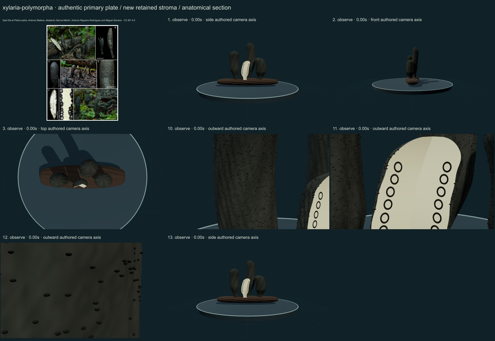
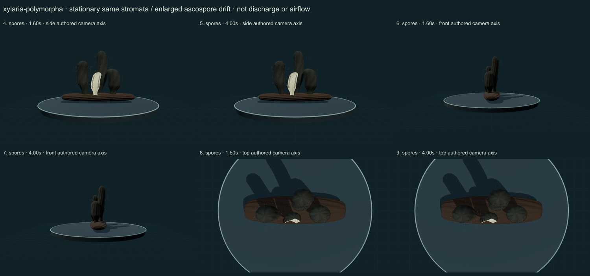

Dead man's fingers · selected mature ascomycete study · v0.6.27
Thirteen actual final rendered states were inspected against the credited primary plate. This is a partly stylized, unmeasured educational reconstruction with a prepared section. No measured tissue, physiological simulation, accuracy percentage or independent specialist validation is established.
Selected thick, rounded and irregular clavate stromata are distinct from slender X. hypoxylon. The first draft had pointed caps and conspicuous horizontal corrugations that disagreed with the photographed cortex. Rounded dome transitions and reduced radial oscillation corrected those defects. A prepared section is visibly open toward the default camera.
Dark numerical grain and small ostiolar papilla cues give a rougher cortex. The primary section photographs show immersed perithecia rather than protruding black eggs: the first 3D lump cues were replaced by flat section-wall cues with pale lumina, and their clearance was corrected after crescent-shaped occlusion was seen.
The supporting stromata and wood retain their geometry and position while enlarged teaching dots drift near selected external ostioles. The two sampled times show the same body with different overlay positions; there is no fungal walking, body waving or mature-body scaling.
The clubs and contextual wood remain too regular and partly stylized. Fine cortex cracking, perithecial placement, basal mycelium, scattering and moisture response are incomplete. Section walls are flat ring cues, not reconstructed flask-shaped cavities, asci or actual tissue thickness. Their placement and count are authored. Close anatomy views show partial regions and clip some whole-body extent; the front view occludes other stromata. No developmental, discharge, airflow or physiological mechanism is computed.
The plate contains authentic photographs and prepared sections, credited to Saúl De la Peña-Lastra, Antonio Mateos, Abelardo García-Martín, Antonio Rigueiro-Rodríguez and Miguel Serrano under CC BY 4.0. Source scale bars apply only to the plate and do not calibrate the normalized model. Primary 2026 Figure 21: all panels are labelled X. polymorpha, including intact and sectioned stromata from AMI-SPL1533, AMI-SPL1586 and AMI-SPL764. The author determination is retained; our model is not a redetermination, scan or measured replica. Natural variation and similar taxa make macroscopic identification insufficient.


Open the retained interactive model · Individual review data
Complete publisher plate, resized and JPEG encoded without generative alteration. Original download SHA-256: 920489a25b366c805e98804067bb08067d0c2064409f0d6a5e182ac7c1253204. Delivered reference SHA-256: 0800f35b15c17d43dd73463aa2d765bbc997eaa20cce7b35267d26a2f69257d6.
Global occurrence maps and counts remain withheld because the cited species-complex determinations have not been reconciled. No Smithsonian specimen determination or native-range validation is claimed.